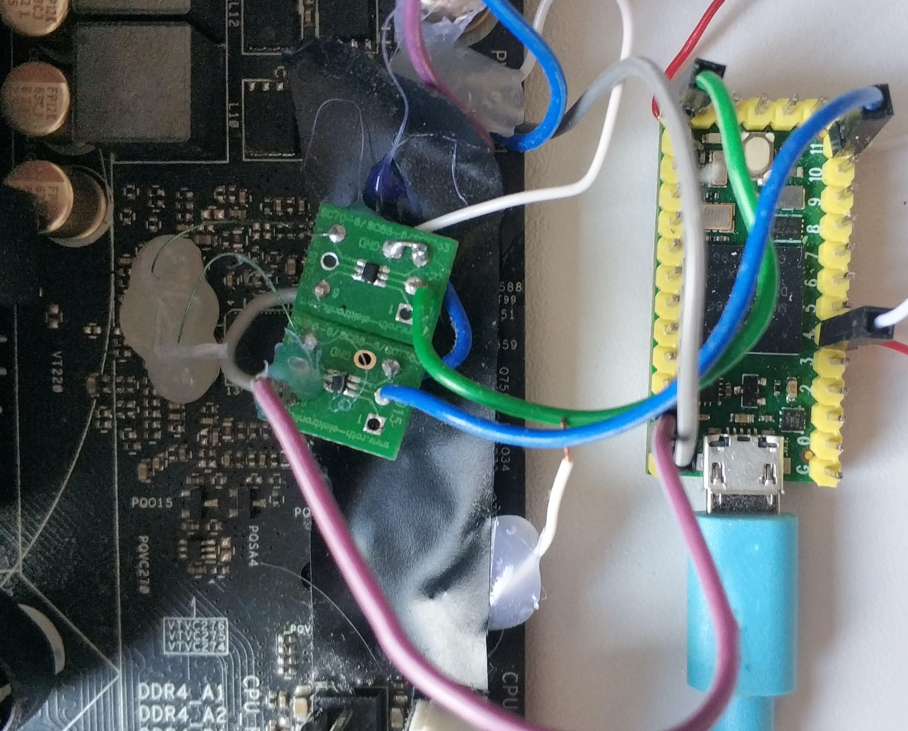

VoltPillager: Hardware undervolting attacks on Intel SGX with a $30 tool
Introduction
Previous work such as Plundervolt has shown that software-based undervolting can induce faults into Intel SGX enclaves and break their security guarantees. However, Intel have addressed this issue with microcode updates.
With VoltPillager, we show that hardware-based undervolting can achieve the same (and more) as Plundervolt, and bypass all currently available countermeasures for SGX.
On a standard motherboard, there is a separate Voltage Regulator (VR) chip that generates and controls the CPU voltage. Our tool, VoltPillager, uses this to connect to the (unprotected) interface of the VR and control that voltage. Based on this, we then mount fault-injection attacks that breach confidentiality and integrity of Intel SGX enclaves, and present proof-of-concept key-recovery attacks against cryptographic algorithms running inside SGX.
VoltPillager is a low-cost device, based on a standard Teensy microcontroller board, and can be built for $30.
The academic paper will be presented at Usenix Security 2021.
Our results may require a rethink of the widely assumed SGX adversarial model, where a cloud provider hosting SGX machines is assumed to be untrusted but has physical access to the hardware.
Building VoltPillager

All sources and PoC code can be found in our Github repo.
The bill of materials for building VoltPillager is:
| Material | Cost |
|---|---|
| Teensy 4.0 Development Board | $ 22 |
| Bus Driver/ Buffer * 2 | $ 1 |
| SOT IC Adapter * 2 | $ 13 for 6 |
| Total | $36 |
Demo videos
FAQ
What is Intel SGX?
Intel Software Guard Extensions (SGX) is a set of security-related instructions that are built into modern Intel CPUs. SGX allows to shield sensitive computations inside so-called “enclaves”. The contents of these enclaves are protected and cannot be accessed or modified from outside the enclave. Intel SGX is also often assumed to protect the trusted code from attackers who have physical control of the platform, such as an untrusted cloud provider. This thread model is widely adopted by cloud service providers such as Azure and SGX software developers such as Fortanix, Enarx and many others.
Does an attacker need physical access to my computer for this?
Yes - this attack cannot be carried out remotely.
So your attacks require physical access - why is this a realistic threat model?
Intel SGX is widely assumed to provide protection against physical attackers, e.g. a malicious cloud provider providing SGX hosting. A number of research papers and industry applications are built on top of the assumption that a cloud provider with control of a server cannot “look” inside or manipulate the enclave’s memory.
Our results show that extremely low-cost attacks are possible with physical access, questioning the security of many cloud-side applications of SGX and highlighting the need for appropriate countermeasures.
More details on the threat model can also be found in Section 1.4 of our paper.
Do the patches for CVE-2019-11157 (Plundervolt) protect against VoltPillager?
No, these patches simply disable the software undervolting interface, but the hardware interface remains active (in fact, it is an important mechanism of the power management of modern CPUs, and cannot be removed or disabled).
I’m not using SGX - do I need to be worried?
Probably not - VoltPillager attacks are mainly relevant for the case of SGX enclaves. In any case, typical end-user CPUs, operating systems, and applications running outside SGX were never designed to protect against attacks with physical access?
Should I stop using and throw away my CPU now?
No!
Is there a CVE, and how did Intel respond?
We reported this issue to Intel on 13 March 2020. Intel evaluated our report and concluded on 5 May that “… opening the case and tampering of internal hardware to compromise SGX is out of scope for SGX threat model. Patches for CVE-2019-11157 (Plundervolt) were not designed to protect against hardware-based attacks as per the threat model”, and, therefore, they will not further address the issue. Intel have not requested an embargo for the vulnerabilities described in this paper, and not assigned a CVE.
I’m using SGX for my cloud application - how can I protect against this issue?
It is unlikely that there will be a microcode update or new CPU generation to prevent such attacks. If you trust your cloud provider, there is probably little you need to do. If your cloud provider is in your threat model, then the best you can currently do is to protect against fault injection through software countermeasures (for example running computations redundantly, etc.).
Where can I find the code and more information?
All sources and PoC code can be found in our Github repo.
Can I use the logo?
Yes. The logo is free to use, rights waived via CC0. Logos are designed by Mike Stimpson.
{kind=link}
Cite the paper
@inproceedings {Chen2021voltpillager,
title = {VoltPillager: Hardware-based fault injection attacks against Intel {SGX} Enclaves using the {SVID} voltage scaling interface},
author={Chen, Zitai and Vasilakis, Georgios and Murdock, Kit and Dean, Edward and Oswald, David and Garcia, Flavio D.},
booktitle = {30th {USENIX} Security Symposium ({USENIX} Security 21)},
year = {2021},
address = {Vancouver, B.C.},
url = {https://www.usenix.org/conference/usenixsecurity21/presentation/chen-zitai},
publisher = {{USENIX} Association},
month = aug,
}
Acknowledgements
This research is partially funded by the Engineering and Physical Sciences Research Council (EPSRC) under grants EP/R012598/1, EP/R008000/1, EP/V000454/1, by the European Union’s Horizon 2020 research and innovation programme under grant agreement No. 779391 (FutureTPM), and by the Paul and Yuanbi Ramsay Endowment Fund.